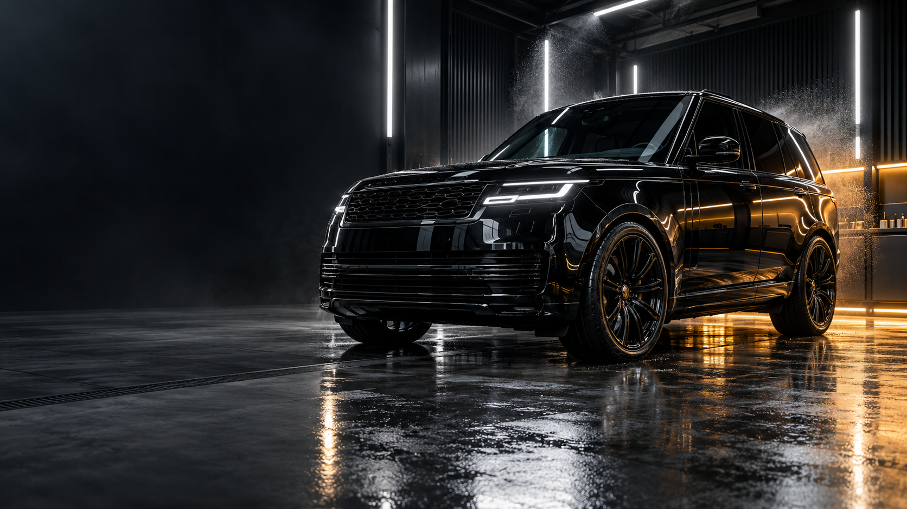
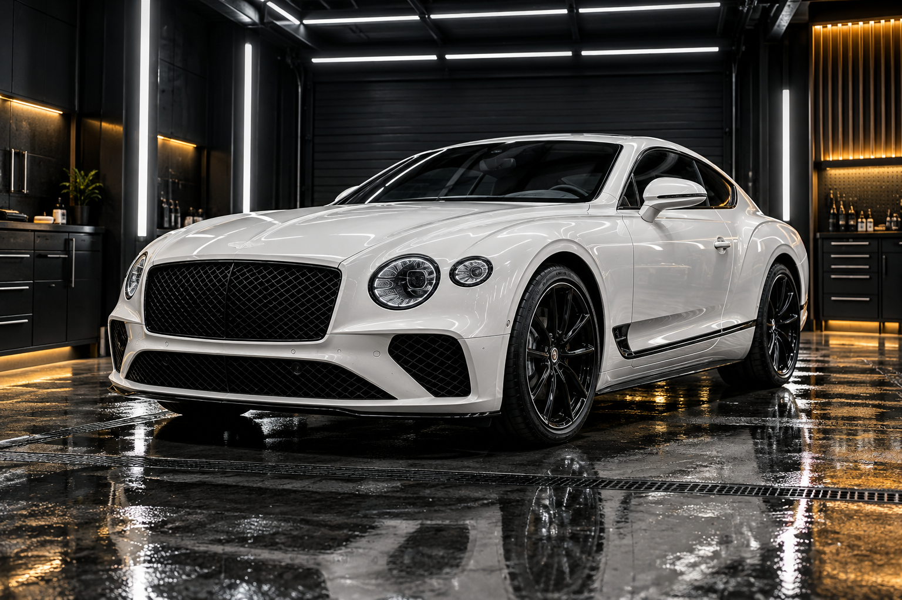
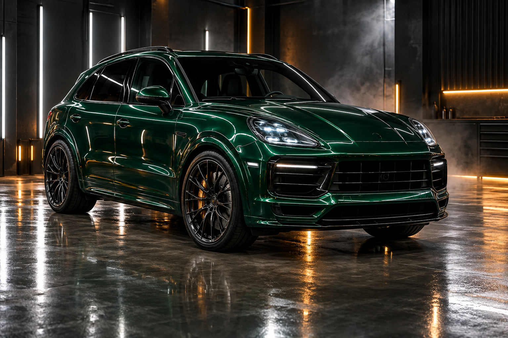

Detalhamento
completo
Higienização, descontaminação e acabamento impecável por dentro e por fora.
Conhecer serviçoTratamento diferenciado para quem entende que cuidar do carro é preservar uma conquista.
Serviços sob medida para preservar, proteger e valorizar o seu veículo em todos os detalhes.
Higienização, descontaminação e acabamento impecável por dentro e por fora.
Conhecer serviçoPelícula de proteção para preservar as áreas mais expostas contra riscos e desgaste.
Conhecer serviçoBrilho profundo, toque sedoso e uma camada de proteção para a sua rotina.
Conhecer serviçoCarros, motos e detalhes especiais tratados com o mesmo rigor.
Conhecer serviçoUm carro bem cuidado não é só bonito na entrega. Ele continua protegido, valorizado e gostoso de dirigir depois que sai daqui.
Falar com a equipeEntendemos o uso, o histórico e o que seu carro realmente precisa.
Preparamos a superfície com técnica, cuidado e produtos profissionais.
Você recebe tudo explicado — e o carro no padrão Pit Stop.
O tratamento diferenciado que seu veículo merece, com tratamento premium, detalhamento completo e PPF.
Veja algumas das experiências que podem fazer parte do seu próximo atendimento.



Se a sua dúvida não estiver aqui, chama a gente no WhatsApp. A conversa começa sem compromisso.
Tirar dúvida no WhatsAppSim. Trabalhamos com horário reservado para garantir atenção total ao seu veículo e uma entrega no nosso padrão.
Você pode enviar fotos e contar um pouco sobre o uso do carro. Nossa equipe orienta a melhor combinação para seu objetivo.
Sim. Trabalhamos com soluções de proteção de pintura, vitrificação cerâmica e detalhamento completo.
Estamos na Rua Agripino Augusto de Andrade, 355, em Lavras — MG. É só chamar para receber a localização.
Conte o que você quer fazer e encontre o melhor horário para o seu veículo.